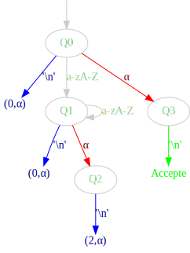

Programmation impérative, projet 2021
Dates et principe
Cette page peut être mise à jour, avec informations complémentaires,
précisions, questions
bonus, etc. Pensez à y revenir souvent.
Projet à rendre pour le 9/1/2020 à 23h59, aucun retard ne sera toléré.
Des soutenances pourront être organisées ensuite.
Lire tout le sujet.
Un rendu de projet comprend :
- Un rapport typographié précisant vos choix, les problèmes
techniques qui se posent et les solutions trouvées ; il précise en
conclusion les limites de votre programme. Le rapport sera de
préférence composé avec LATEX. Le soin apporté à la grammaire et à
l'orthographe est largement pris en compte.
- Un code abondamment commenté ; la première partie des
commentaires comportera systématiquement les lignes :
- @ requires décrivant les préconditions : c'est-à-dire
conditions sur les paramètres pour une bonne utilisation (pas de
typage ici),
- @ assigns listant les zones de mémoire modifiées,
- @ ensures décrivant la propriété vraie à la sortie de la
fonction lorsque les préconditions sont respectées, le cas échéant
avec mention des comportements en cas de succès et en cas d'échec,
En outre chaque boucle while doit contenir un commentaire
précisant la raison de sa terminaison (le cas échéant). De même en
cas d'appels récursifs.
On pourra
préciser des informations additionnelles si des techniques
particulières méritent d'être mentionnées.
Le code doit enfin compiler sans erreur (évidemment) et sans warning lorsque
l'option -Wall est utilisée. Pour ce sujet, une seule
exception à cette règle sera tolérée : le warning warning:
array subscript has type ‘char’ sera acceptable.
Un code qui ne compile pas
se verra attribuer la note de 0.
- Un manuel d'utilisation de votre exécutable, même minimal, est toujours bienvenu.
Avez-vous lu tout le sujet ?
Protocole de dépôt
Vous devez rendre
- Votre rapport (en pdf) et
- Vos fichiers de code
rassemblés dans une archive tar gzippée identifiée
comme votre_prénom_votre_nom.tgz.
La commande
devrait ressembler à :
tar zcvf randolph_carter.tgz rapport.pdf fichiers.c
autres_truc_éventuels.c…
N'OUBLIEZ surtout PAS de mettre le nom identifiant l'archive
(donc nouveau) en PREMIER.
Lisez le man ! et testez le contenu de votre archive (une
commande comme par exemple :
tar tvf
randolph_carter.tgz doit lister les fichiers et donner leur
taille).
- Une archive qui ne contient pas les fichiers demandés ne
sera pas excusable.
- **Une archive qui n'est pas au format demandé (archive
tar gzippée avec suffixe .tgz) ne sera
pas corrigée** donc c'est 0/20.
Toute tentative de fraude (plagiat, etc.) sera sanctionnée. Si
plusieurs projets ont des sources trop similaires (y compris
sur une partie du code uniquement), tous leurs auteurs se
verront attribuer la note 0/20. En particulier, il faudra prendre
soin de ne pas publier son travail sur un dépôt public (en tout cas
pas avant la date de fin de rendu). On évitera également de demander
(ou de donner) des conseils trop précis à ses camarades (y compris
des promotions précédentes), ces conseils ayant pu être donnés à
plusieurs personnes. Les rendus seront comparés deux à deux.
Procédure de dépôt
Vous devez enregistrer
votre archive tgz dans le dépôt dédié au cours IPI (ipi-2021) en vous
connectant à http://exam.ensiie.fr. Ce dépôt sera ouvert
jusqu'au 9 janvier inclus.
Contexte
Le but de ce projet est d'implanter un programme qui exécute des
automates LR(1). Ces derniers servent à reconnaître des langages de
programmation.
Les automates vous seront fournis dans un certain format décrit
ci-après. Il n'est pas nécessaire pour ce projet de comprendre
par quel moyen de tels automates ont été obtenus.
Interface
Le programme va lire un fichier (dont le nom sera passé en
paramètre de l'exécutable) qui contiendra une description de
l'automate. Il va ensuite lire des lignes sur l'entrée standard. Après
chaque ligne lue, il indiquera si la ligne est correcte pour le
langage correspondant à l'automate, auquel cas il
affichera Accepted, sinon il affichera Rejected.
Par exemple, si le
fichier dyck.aut contient
une description d'un automate correspondant au langage des mots bien
parenthésés, on aura le comportement suivant (en bleu les entrées de
l'utilisateur) :
$ ./automaton dyck.aut
File "dyck.aut" correctly read. Please enter your inputs.
()
Accepted
()(())
Accepted
(()
Rejected
(()()))
Rejected
(blabla)
Rejected
Automates LR1
Définition et exécution
Un automate LR1 est donné par les éléments suivants :
- un ensemble fini d'états ;
- un état initial ;
- un alphabet d'entrée ;
- un autre alphabet de symboles dit non-terminaux ;
- une fonction action qui à chaque état et chaque lettre associe une
action : cette action peut être soit Rejette, soit Accepte, soit
Décale, soit Réduit ;
- une fonction (partielle) décale qui à un état et une lettre
associe un état ; cette fonction n'a besoin d'être définie que quand
l'action associée à l'état et la lettre est Décale ;
- une fonction (partielle) réduit qui à un état associe un
entier et un symbole non-terminal ; cette fonction n'a besoin
d'être définie que quand l'action associée à l'état et la lettre
est Réduit ;
- une fonction (partielle) branchement qui à un état et un
symbole non-terminal associe un état.
Un tel automate fonctionne à l'aide d'une pile
d'état. Initialement, cette pile contiendra un unique élément,
à savoir l'état initial. Au cours de l'exécution, l'état courant
sera celui situé au sommet de la pile.
On essaie de reconnaître un mot en commençant par la lettre la plus
à gauche.
Le comportement d'un tel automate est le suivant : si l'état
courant est s et la lettre d'entrée est c, on
agit en fonction de action(s,c) :
- Si c'est Rejette :
- on s'arrête, le mot ne fait pas
partie du langage.
- Si c'est Accepte :
- on s'arrête, le mot fait partie
du langage.
- Si c'est Décale :
- on empile décale(s,c),
on passe à la lettre suivante de l'entrée.
- Si c'est Réduit :
- si réduit(s)
vaut (n, A), on commence par dépiler n états ;
l'état courant devient alors s' ; on empile
alors branchement(s',A) ;
on ne passe pas à la lettre suivante de l'entrée.
Par exemple, l'automate suivant permet de reconnaître les mots formés
d'une séquence quelconque de lettres alphabétiques, suivie par un retour à la ligne :

L'état initial est l'état Q0, on
représente décale par les flèches noires, réduit par
les bleues et branchement par les rouges.
Sur l'entrée "Ok\n", en partant de la pile
contenant Q0, on va avoir l'exécution suivante :
- Pile : Q0, Entrée :
"Ok\n"
L'action est Décale. On empile Q1, on avance dans l'entrée.
- Pile : Q0 Q1, Entrée :
"Ok\n"
L'action est Décale. On empile Q1, on avance dans l'entrée.
- Pile : Q0 Q1 Q1, Entrée :
"Ok\n"
L'action est Réduit. On dépile 0 fois, on suit le branchement par
α et
on empile donc Q2.
- Pile : Q0 Q1 Q1 Q2, Entrée :
"Ok\n"
L'action est Réduit. On dépile 2 fois, la pile vaut donc
Q0 Q1. On suit le branchement par
α et
on empile donc Q2.
- Pile : Q0 Q1 Q2, Entrée :
"Ok\n"
L'action est Réduit. On dépile 2 fois, la pile vaut donc
Q0. On suit le branchement par
α et
on empile donc Q3.
- Pile : Q0 Q3, Entrée :
"Ok\n"
L'action est Accepte. Le mot est accepté.
Implémentation et format du fichier
Les états seront représentés par un entier sur un octet. (On aura
donc au maximum 256 états.) L'état initial sera l'état 0.
Pour l'alphabet d'entrée mais aussi pour les symboles
non-terminaux, on utilisera les caractères dont le code ASCII est
compris entre 0 et 127 inclus.
Les actions seront représentées par des entiers : Rejette = 0,
Accepte = 1, Décale = 2 et Réduit = 3.
On supposera qu'on ne dépilera jamais plus de 256 états lors d'une
réduction, on pourra donc représenter la première composante
de réduit(s,c) sur un octet.
Un fichier contenant une description d'un automate LR(1) respectera
le format suivant :
- une première ligne contenant
a n
où n est le nombre d'états de l'automate ;
-
n × 128 octets représentant les
valeurs de action(s,c) pour tout état s et toute
lettre c (dans l'ordre action(0,0) action(0, 1)
action(0, 2) ... action(0, 127) action(1, 0) action(1, 1) ... action(n,127)), le tout suivi d'un retour à la
ligne ;
n octets représentant la première
composante de réduit(s) pour tout état s, le tout suivi d'un retour à la
ligne ;n octets représentant la deuxième
composante de réduit(s) pour tout état s, le tout suivi d'un retour à la
ligne ;- une séquence de groupement de trois octets représentant la fonction
partielle décale ; un groupement de trois
octets s c s' indique
que décale(s,c) = s' ; cette séquence se terminera
par le groupement de trois octets
'\255' '\255' '\255' ;
- une séquence de groupement de trois octets représentant la fonction
partielle branchement ; un groupement de trois
octets s A s' indique
que branchement(s,A) = s' ; cette séquence se terminera
par le groupement de trois octets
'\255' '\255' '\255'.
Exemples d'entrées
Vous trouverez ici des entrées pour tester votre programme.
- Mots
- C'est l'automate donné
en exemple
ci-dessus. Il reconnaît les mots formés
d'une séquence quelconque de lettres alphabétiques, suivie par un retour à la ligne.
- Mots 2
- Un autre automate qui
reconnaît le même langage.
- Langage de Dyck
-
Cet automate reconnaît les mots utilisant uniquement les
parenthèses
( et ) et qui
sont bien parenthésés.
- Expressions arithmétiques
-
Cet automate reconnaît les expressions formées de constantes
entières (positives ou négatives), des opérateurs binaires
+ - *
/ et des parenthèses ( et ), avec
la possibilité de mettre des espaces.
D'autres exemples seront probablement proposés d'ici la date de rendu.
-
Quand un mot n'est pas reconnu, indiquer à quel endroit de l'entrée
l'erreur s'est produite.
-
Après avoir lu un fichier nom.aut, écrire dans un fichier nom.dot une sortie au format
DOT pour représenter l'automate comme dans l'exemple ci-dessus.
Conseils
Pour la récupération d'une entrée de l'utilisateur,
plutôt que faire un scanf directement, il vaut parfois mieux
récupérer une ligne en entier avec fgets puis
utiliser sscanf dessus ; on peut utiliser la suite de
commandes suivantes :
char buf[256];
.
.
.
fgets(buf, 256, stdin);
sscanf(buf, "format", ...);
Vous devez avoir lu jusqu'ici avant de commencer.